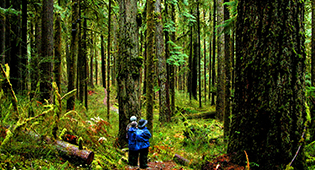
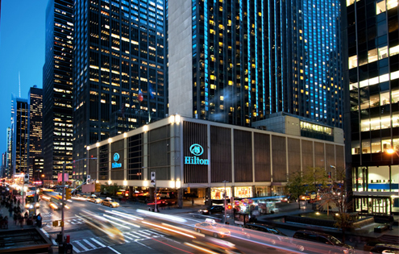

这块观光区域是华府最中心的地标，1963年马丁•路德•金曾在这里发表“I have a dream”的演讲，从此此地成为见证民众声音之地。除了参观林肯纪念堂、倒影池之外，还可在这里观赏日出、参观博物馆等。
潮汐湾的周围有很多华盛顿知名建筑，例如著名的罗斯福纪念馆、华盛顿纪念碑、国会大厦和杰斐逊纪念馆等等。一到每年的3月和4月，潮汐湖边就会格外热闹，人们会在这里欣赏樱花，这3000株的樱花是1912年东京市长赠送给华盛顿的。每年，樱花烂漫的潮汐湖都会迎来100万人次左右的游客。这其实是一道人工小湖，如果在樱花节期间到访此地，便能感受到浓郁的地方特色，一篇粉色花卉倒映在湖水之上，摇曳着美妙的精致。同时还能搭乘出租的手划船，在湖中信游。
洛克•克里克公园，从波托马克河开始，沿着公园里一条窄通道延伸向北到华盛顿，然后扩展到开阔的上西北区公共用地。那里以美妙的脚踏车和徒步旅行而闻名。
位于华盛顿州的西北部奥林匹克半岛的中央地区，距西雅图大概有145公里的车程。因海拔2428米高的奥林波斯山雄踞其中而得名。奥林匹克国家公园有很多美丽山景和其他旖旎景观，是摄影爱好者的绝佳去处。如果您想在旅游途中拍摄些公园美景，那么可以考虑下面这几个绝佳的取景点：奥林匹斯山(Mount Olympus)、霍河雨林、飓风山 (Hurricane Ridge)。奥林匹克国家公园内的风暴国王步道稀疏地生长着大量年代久远的雪松，美丽的新月形湖泊零星的分布于步道的顶端，如此的仙境自是令人神往。奥林匹克半岛中心的奥林匹克国家公园占地面积达1,400平方英里，以雨林为特色，由三处生态系统截然不同山地组成，因此公园被称作“三处合而为一的公园”，包括奥林波斯山、山区草地、岩石林立的海岸线以及温带雨林。奥林匹克园区内的生态系统非常罕见的奇特，同时获得了世界文化遗产公园和国际生物圈保护区的双重身份。
林肯纪念堂是为纪念美国总统林肯而设立的纪念堂，位于华盛顿特区国家广场西侧，阿灵顿纪念大桥引道前，与国会和华盛顿纪念碑成一直线。在纪念堂和华盛顿纪念碑之间，有两座一共2292尺长的倒映池。在林肯纪念堂附近还有越战纪念碑，韩战纪念碑，和二战纪念碑。林肯纪念堂由美国国家公园管理局管理，常年免费，开放时间从早上8点至深夜，每年12月25日休馆。
华盛顿纪念碑是美国首都华盛顿哥伦比亚特区的地标，为纪念美国总统乔治•华盛顿而建造。石碑建筑物的内部中空，是世界最高的石制建筑，原本米尔斯的最初设计是在底部有开国英雄柱廊围绕着华盛顿纪念碑，但在美国工兵处陆军上校凯西被托付重新设计地基与塔身之后，他放弃了柱廊的构想，专注于方尖碑的建造，并将地基挖深、以古埃及的比例重新设计主塔。
国会大厦，又称国会山庄，是美国国会所在地，位于美国首都华盛顿特区的国会山，坐落在华盛顿特区国家广场（National Mall）东端。在地理上，美国国会大厦位于华盛顿特区偏东处，但常被看作华盛顿市区的中心。华盛顿特区建筑物地址的东西南北，都是以国会大厦作为基准。
白宫是美国总统的官邸和办公室，位于华盛顿哥伦比亚特区西北宾夕法尼亚大道1600号，是一幢白色的新古典风格砂岩建筑物。其产权由美国国家公园管理局拥有，是“总统公园”的一部分。20美元纸币的背面图片就是白宫。北接拉斐特广场，南邻爱丽普斯公园，与高耸的华盛顿纪念碑相望。
乔治城是华盛顿市的一个组成部分，那里保留了不少十八、十九世纪的建筑物，街头上到处有喷泉和雕塑，河边还铺有木板路，是个非常有情调的地区。这一带不仅是有名的观光区，还集中了许多小型餐厅和服饰店，中心地带的威斯康辛大道更是华盛顿的购物天堂。游客要来乔治城最好是在午后，先沿着河岸漫步，欣赏沿途风景，随后找家小咖啡店坐坐，或者看看有什么好东西可买。
佛罗里达
佐治亚州
路易斯安那
马萨诸塞州
俄勒冈州
华盛顿特区
作为首都，华盛顿哥伦比亚特区（Washington D.C.）是去美国旅游的必到之处。这里有标志性的华盛顿纪念碑，宽阔的国家广场，田园般的葱郁景致，规划整齐的街区系统。更不用提诸如国会大厦、林肯纪念馆等一系列在电影大片中经常露脸的知名地标性建筑了。
查 看 官 网>>
National Mall
国家广场
这块观光区域是华府最中心的地标，1963年马丁•路德•金曾在这里发表“I have a dream”的演讲，从此此地成为见证民众声音之地。除了参观林肯纪念堂、倒影池之外，还可参观博物馆等。
Tidal Basin
潮汐湾
潮汐湾的周围有很多华盛顿知名建筑，例如著名的罗斯福纪念馆、华盛顿纪念碑、国会大厦和杰斐逊纪念馆等等。一到每年的3月和4月，潮汐湖边就会格外热闹。
Rock Creek Park
洛克•克里克公园
洛克•克里克公园，从波托马克河开始，沿着公园里一条窄通道延伸向北到华盛顿，然后扩展到开阔的上西北区公共用地。那里以美妙的脚踏车和徒步旅行而闻名。

Olympic National Park
奥林匹克国家公园
位于华盛顿州的西北部奥林匹克半岛的中央地区，距西雅图大概有145公里的车程。因海拔2428米高的奥林波斯山雄踞其中而得名。公园有很多美丽山景和其他旖旎景观。
Lincoln Memorial
林肯纪念堂
林肯纪念堂是为纪念美国总统林肯而设立的纪念堂，位于华盛顿特区国家广场西侧，阿灵顿纪念大桥引道前，与国会和华盛顿纪念碑成一直线。林肯纪念堂常年免费。
Washington Monument
华盛顿纪念碑
华盛顿纪念碑是美国首都华盛顿哥伦比亚特区的地标，为纪念美国总统乔治•华盛顿而建造。石碑建筑物的内部中空，是世界最高的石制建筑。米尔斯专注于方尖碑的建造。
Capitol
国会大厦
国会大厦，又称国会山庄，是美国国会所在地，位于美国首都华盛顿特区的国会山，坐落在华盛顿特区国家广场（National Mall）东端。在地理上，美国国会大厦位于华盛顿特区偏东处。
White House
白宫
白宫是美国总统的官邸和办公室，位于华盛顿哥伦比亚特区西北宾夕法尼亚大道1600号，是一幢白色的新古典风格砂岩建筑物。其产权由美国国家公园管理局拥有，是“总统公园”的一部分。
Georgetown
乔治城
乔治城是华盛顿市的一个组成部分，那里保留了不少十八、十九世纪的建筑物，街头上到处有喷泉和雕塑，河边还铺有木板路，是个非常有情调的地区。
希尔顿全球酒店有着95年的历史，是备受世界尊敬的品牌。希尔顿全球酒店的“欢迎”项目，热情欢迎中国旅客，前台团队的成员能够说流利的中文，酒店提供传统中餐早餐以及宾至如归的服务。希尔顿全球在美国有3500家酒店，适合各种风格及场合，更有不同特色的子品牌酒店，给游客们一个梦寐以求的悠闲假日，领略万千世界。
查 看 官 网>>
